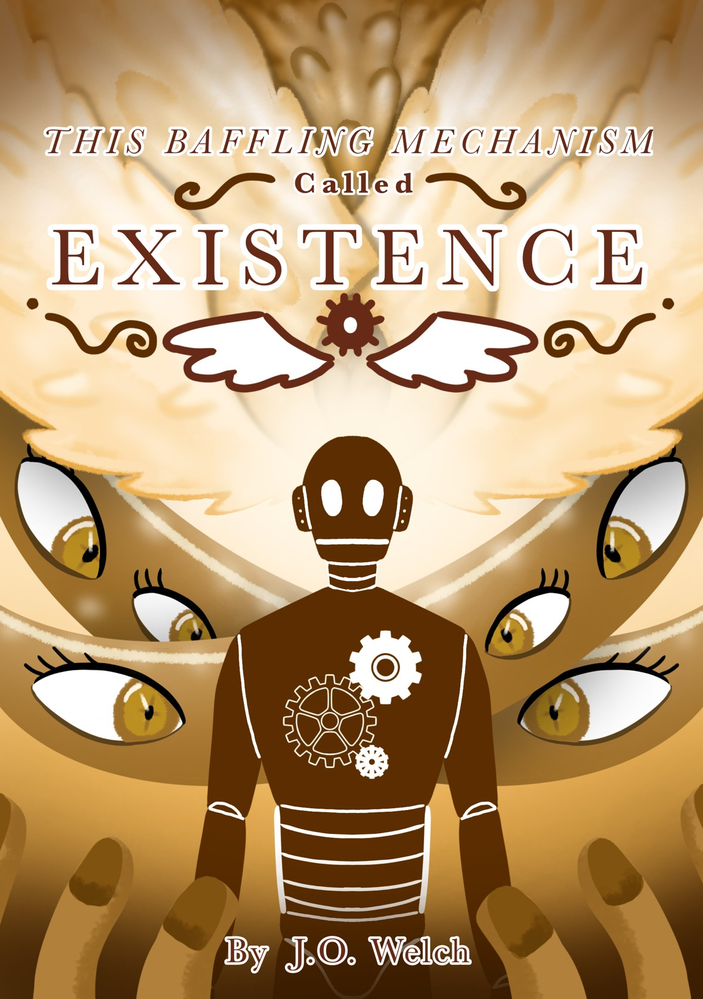

• This Baffling Mechanism Called Existence
The story of Azaria, a goddess of death. For countless millennia, She lived a simple existence. She wandered the world searching for recently deceased souls, guiding them toward the afterlife. That was until she encountered an automaton named Seer. This mechanical man showed all signs of sentience; he could think, speak, and feel. However, he did not have a soul. Will Azaria resolve the doubts Seer’s existence raises, or will he bend the binary of life and death that she once believed to be true?
Cover art by luckystar85.
30 minute read.